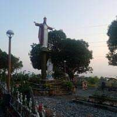
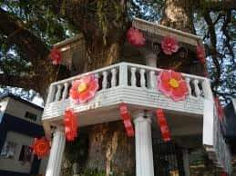
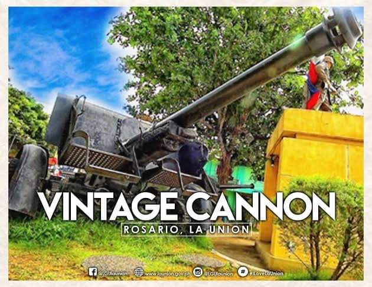
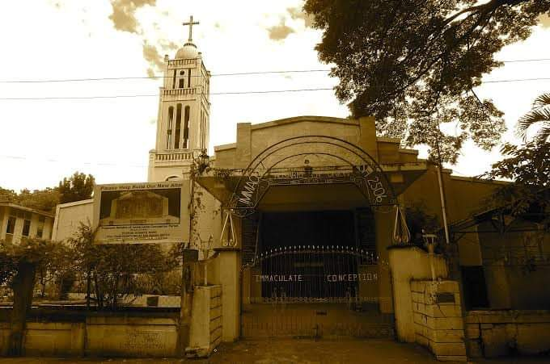
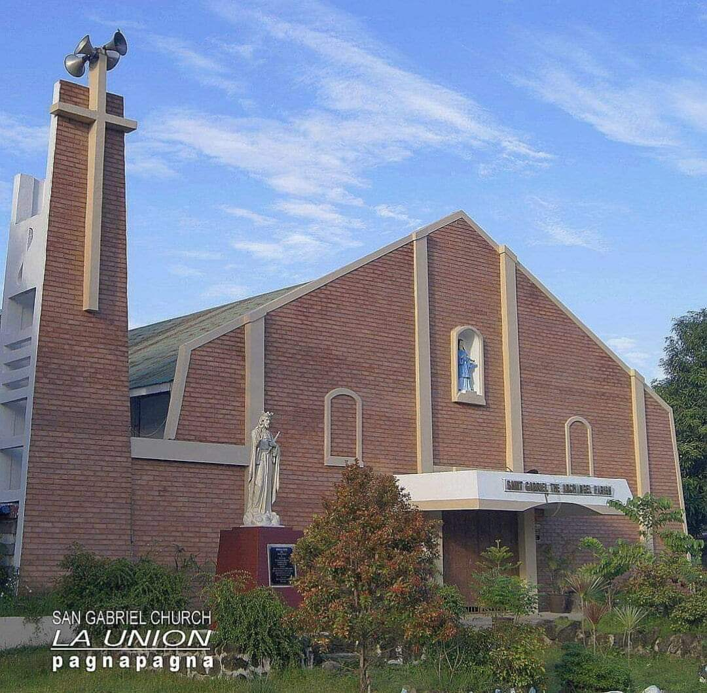

ROSARIO TOURIST ATTRACTIONS AND FESTIVAL
THE QUEEN OF PRIORY
Benedictine Siters, Queen of Peace Priory, Damortis, La Union.
THE TREE HOUSE
WORLD WAR II VINTAGE CANONS
The World War II Vintage Canons located at the town plaza of Rosario, La Union.
IMMACULATE CONCEPCION PARISH CHURCH
The Immaculate Concepcion Parish Church was canonically erected in 1869. The church is located on the eastern side fronting the National Highway and Municipal Building.
SAN GABRIEL TOURIST ATTRACTIONS
TANGADAN WATERFALLS

Situated in the town of San Gabriel, Tangadan Falls is one of at least ten waterfalls in the town. It is a two-tier cascade along Baroro River with cold water emanating from the hinterland of the province adjacent to the Cordillera Mountain Range.
SAINT GABRIEL THE ARCHANGEL PARISH
Not as old as the other churches of La Union and its facade was renovated or improved by the "Daligues" family and dedicated on March 25, 2017.